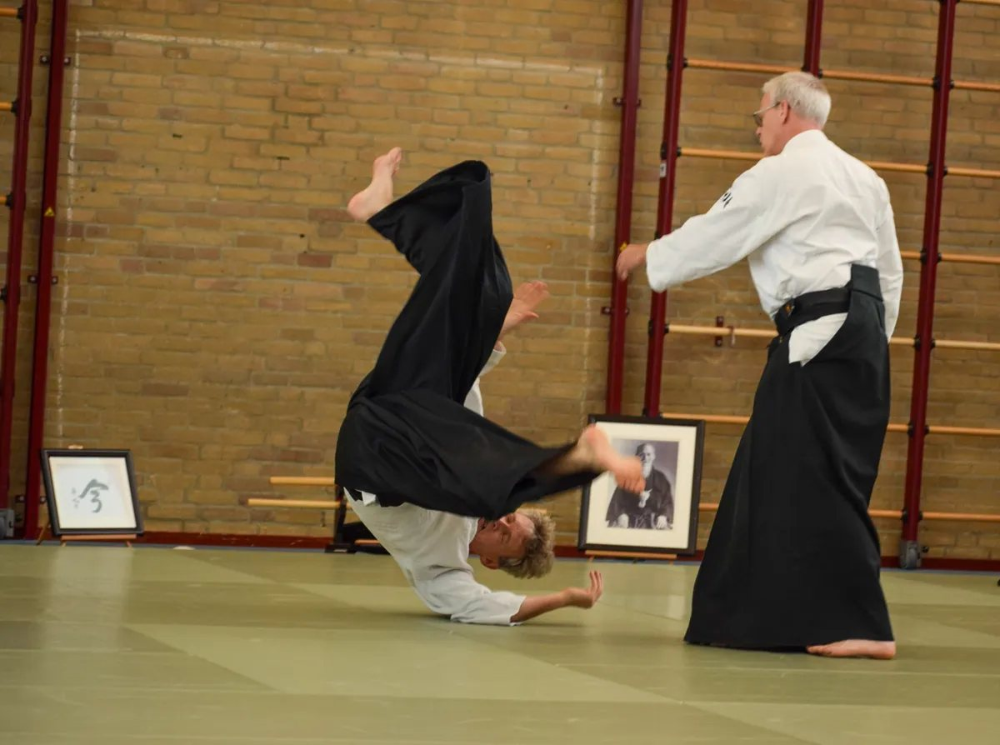
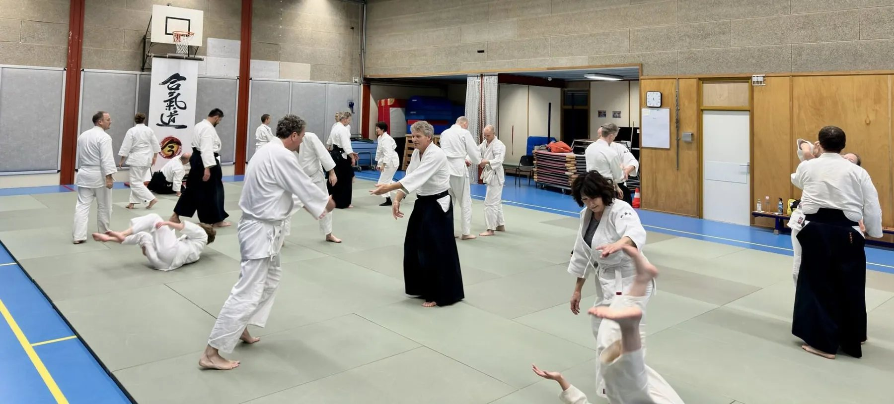
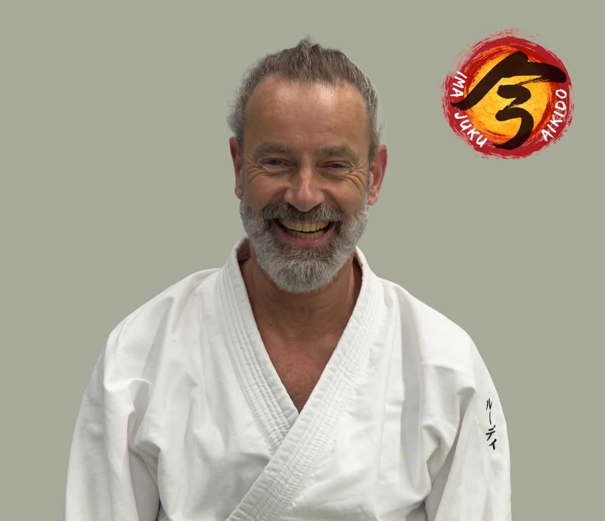
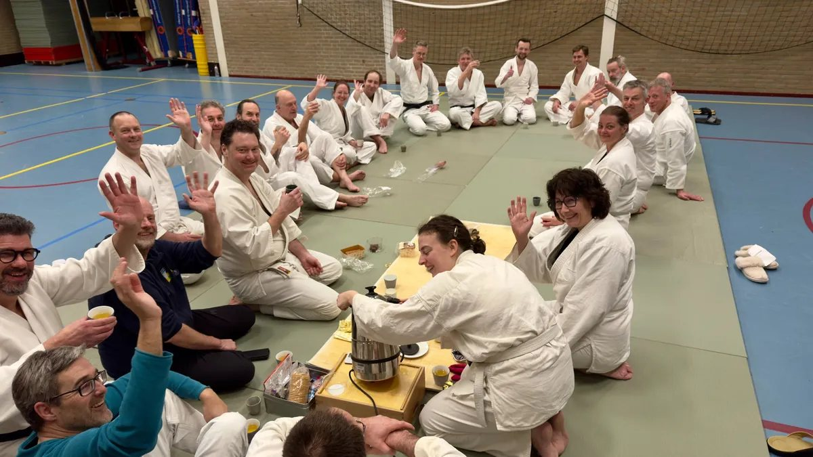

Aikido · Baarn & Zeist
Beweeg vanuit
Beweeg vanuit
rust. Leer van
binnenuit.
Aikido is een Japanse krijgskunst waarin je leert omgaan met druk, balans en samenwerking — zonder competitie.
Aikido is een Japanse krijgskunst waarin je leert omgaan met druk, balans en samenwerking — zonder competitie.
Ben je op zoek naar een manier om fysiek en mentaal sterker te worden? Bij Ima Juku train je in een veilige en respectvolle omgeving aan jezelf: je conditie, je focus en je weerbaarheid.
Of je nu beginner bent of al ervaring hebt, je bent welkom om mee te doen. Kom langs voor een proefles en ervaar zelf hoe Aikido je helpt om stevig en ontspannen in het leven te staan.
Train mee, ontwikkel jezelf, ontdek Aikido!
Ima Juku spreek je uit als iemaa djoekoe. Ima betekent nu: we leven in het nu, en we trainen in het nu.

"Aikido is niet de weg van de strijd, maar de weg van de vrede."Morihei Ueshiba — oprichter van aikido
Je kunt twee keer vrijblijvend meetrainen voordat je beslist.
Na je proeflessen bespreken we rustig het passende lidmaatschap.
Voor studenten geldt een aangepast, goedkoper lesgeld.
De proeflessen zijn gratis en verplichten tot niets. Actuele lesgelden en praktische afspraken bespreken we persoonlijk, zodat je precies weet waar je aan toe bent voordat je lid wordt.

Je traint op je eigen niveau, samen met beginners en gevorderden. Techniek, aandacht en veiligheid staan voorop.
Arjan de Vries
6de dan · hoofdleraarMeer dan 30 jaar Aikido ervaring. Heeft Ima Juku opgericht en is hoofd- en eindverantwoordelijk voor de dojo.

Rudi
3de dan · assistent · niveau 2 Aikido leraarLid vanaf bijna het eerste uur van Ima Juku.
Dennis
3de dan · assistent · niveau 2 Aikido leraarLid vanaf bijna het eerste uur van Ima Juku.
Martijn
3de dan · assistent · niveau 3 Aikido leraarLid vanaf bijna het eerste uur van Ima Juku.
Een proefles is bedoeld om rustig te ervaren hoe Aikido bij Ima Juku voelt. Dit zijn de vragen die vaak vooraf al helpen.
Nee. Beginners zijn welkom. Je hoeft niets te bewijzen en je krijgt begeleiding op de mat.
Een trainingsbroek zonder ritsen of een legging met een T-shirt is prima. Je traint zonder schoenen of sokken op de mat.
Dat kan. Toch raden we meestal aan om mee te doen, omdat je Aikido vooral ervaart door te bewegen.
Geef een blessure altijd vooraf of bij binnenkomst aan. We denken graag mee en je traint binnen je eigen grenzen. Bij twijfel is overleg met arts of fysiotherapeut verstandig.
Ima Juku is een dojo voor volwassenen vanaf 18 jaar.
De eerste twee proeflessen zijn gratis. Daarna bespreken we het passende lidmaatschap. Studenten betalen een lager tarief.

Ima Juku is een plek waar je scherp en aandachtig oefent, maar waar ruimte blijft voor menselijkheid. Je leert vallen, opstaan, bewegen en samenwerken.
Dat maakt een proefles laagdrempelig: je hoeft niets te bewijzen. Je hoeft alleen te komen ervaren hoe het voelt om mee te trainen.
Kom een avond kijken en meedoen. Je hoeft geen ervaring te hebben — en geen beslissing te nemen. Je krijgt een eerlijke indruk van wat aikido bij Ima Juku is.
Proefles aanvragenAanmelding via Laposta · We sturen je een bevestiging
Heb je een vraag over trainingen, lidmaatschap of iets anders dan een proeflesaanvraag? Mail ons of stuur een WhatsApp-bericht, dan reageren we persoonlijk.